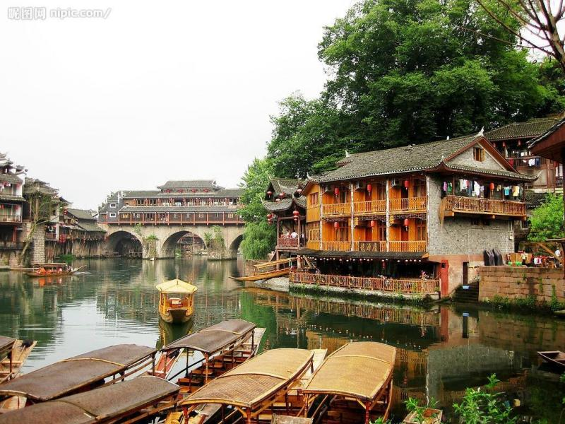

凤凰古城
凤凰古城位于湖南省湘西土家族苗族自治州西南部，地处武陵山脉南部，云贵高原东侧，国家4A级景区。因背依的青山酷似一只展翅欲飞的凤凰由而得名，是一个以苗族、土家族为主的少数民族聚集地。凤凰古镇历史悠久，风景秀丽，城内紫红沙石砌成的城楼、沿沱江而建的吊脚楼、古色古香的明清古院，积油绿的沱江静静地流淌；城外有南华山国家森林公园、城下艺术宫殿奇梁洞、建于唐代的黄丝桥古城、举世瞩目的南方长城等风景区。与云南丽江古城、山西平遥古城媲美，还享有“北平遥，南凤凰”的美誉。2001年，凤凰古城被授予国家历史文化名城称号。湖南十大文化遗产之一，也是湘西旅游经济圈中的龙头，与里耶古城、老司城共同被评为湘西旅游的三块金字招牌。
地形地貌：凤凰古城地形复杂，东部及东南角的河谷丘陵地带为第一级台阶，以低山、高丘为主、兼有岗地及部分河谷平地、地表切割破碎，谷狭坡陡，一般海拔在500米以下。从东北到西南的中间地带为第二级台阶，海拔500～800米。西北部中山地带为第三级台阶，海拔在800米以上。
建筑布局：
凤凰古城始建于清康熙四十三年（1704年），历经300多年古貌犹存。东门和北门古城楼尚在。城内青石板街道，江边木结构吊脚楼，以及朝阳宫、古城博物馆、杨家祠堂、沈从文故居、熊希龄故居、天王庙、大成殿、万寿宫等建筑。凤凰古城以回龙阁古街为中轴，连接无数的石板小巷，沟通全城。回龙阁古街是一条纵向随势成线、横向交错铺砌的青石板路，自古以来便是热闹的集市。凤凰古城分为新旧两个城区，老城依山傍水，清浅的沱江穿城而过，红色砂岩砌成的城墙伫立在岸边，南华山衬着古老的城楼，城楼还是清朝年间的，锈迹斑斑的铁门。凤凰古城北门城楼本名“璧辉门”，北城门下宽宽的河面上横着一条窄窄的木桥，以石为墩，两人对面都要侧身而过，曾是出城的唯一通道。
主要景点：凤凰神凤文化景区由二十多处景点组成：凤凰六句阵、凤凰台、凤竹林海、有凤来仪、凤缘亭、引凤桥、百鸟朝凤、九九神阶、神凤殿、凤凰座、十八神性图腾柱、凤凰纪、醴泉台、五德门、凤凰物语、百鸟园、放生台、乘风栈道、锵锵阁、翙翙廊、秋秋楼等。